Введите пароль, полученный от преподавателя
Освойте искусство создания эффективных промптов: от базовых элементов до продвинутых техник и фреймворков.
Что такое промпт, почему он важен и какие ошибки допускают новички.
Промпт — это входные данные, которые вы передаёте модели для получения желаемого результата.
Качество промпта напрямую определяет качество ответа. Хороший промпт — это чёткий, контекстуальный и структурированный запрос.
Теперь, когда мы знаем основы, разберём какие бывают промпты — по функции, контексту и области применения.
Четыре ключевых компонента, из которых строится эффективный промпт.
Что именно модель должна сделать. Чёткое действие или задача.
Фоновая информация, которая помогает модели понять ситуацию.
Конкретные данные для обработки: текст, числа, примеры.
Желаемый формат, стиль, длина и структура ответа.
Включайте элементы и наблюдайте, как промпт становится лучше.
Вы собрали промпт из элементов — теперь научимся системно оптимизировать его через итеративный процесс.
Большинство LLM обучены преимущественно на англоязычных данных. Промпты на английском дают более точные и развёрнутые ответы.
Используйте русский, когда нужен ответ на русском языке, работаете с русскоязычным контекстом или аудиторией.
Промпт-инжиниринг — это цикл, а не одноразовое действие
Четыре правила, которые сразу повышают качество ответов.
Определите конкретное действие, которое должна выполнить модель. Избегайте абстракций.
Добавьте информацию о ситуации, компании, аудитории. Чем больше контекста — тем лучше результат.
Укажите конкретные параметры: количество пунктов, длину, формат, ограничения.
Задайте модели роль эксперта — это активирует соответствующие знания и стиль.
Сравните «до» и «после» — нажмите чтобы увидеть улучшения.
Мы упоминали контекст как элемент промпта — теперь разберём, как модель его обрабатывает и почему это важно.
Максимальный объём текста, который модель может «видеть» одновременно. Измеряется в токенах.
Токен — это фрагмент текста (слово, часть слова или символ). В среднем:
Зная элементы и контекст, используем готовые шаблоны, чтобы собирать промпты быстрее и эффективнее.
Подробный разбор каждого фреймворка с примерами промптов.
Одна задача — 4 разных подхода. Выберите фреймворк и увидите результат.
Самый детальный фреймворк из 7 компонентов. Для сложных, многослойных задач.
Фреймворки помогают структурировать промпт. Теперь изучим техники, которые меняют сам способ рассуждения модели.
Посмотрите, как техника самокритики улучшает промпт шаг за шагом.
Вы освоили техники промптинга — теперь посмотрим, какие инструменты ChatGPT помогут применить их на практике.
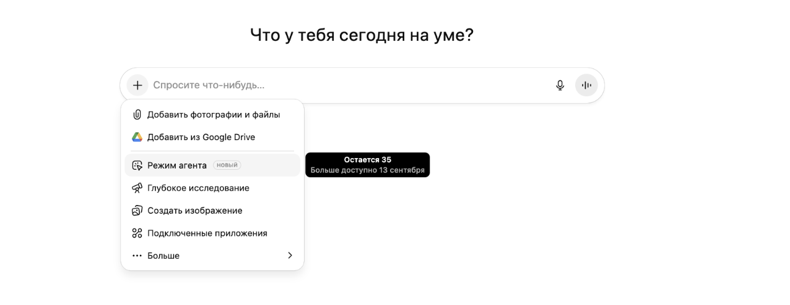
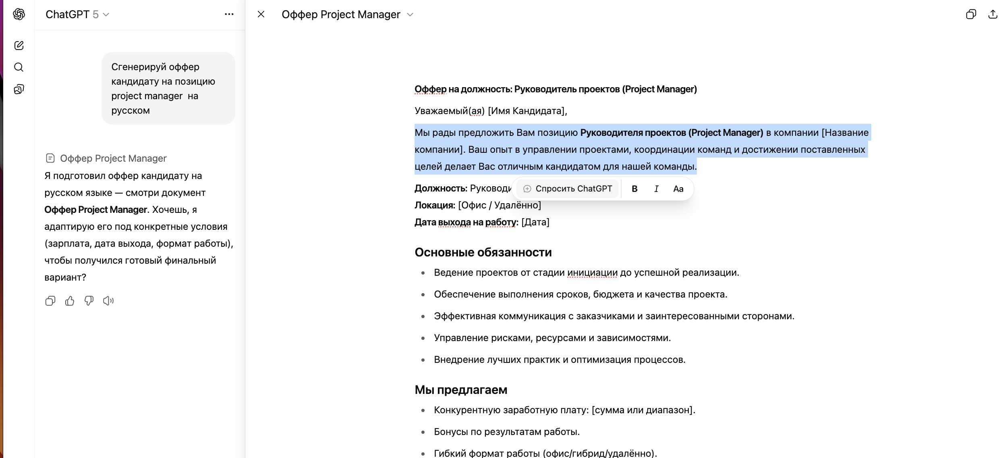
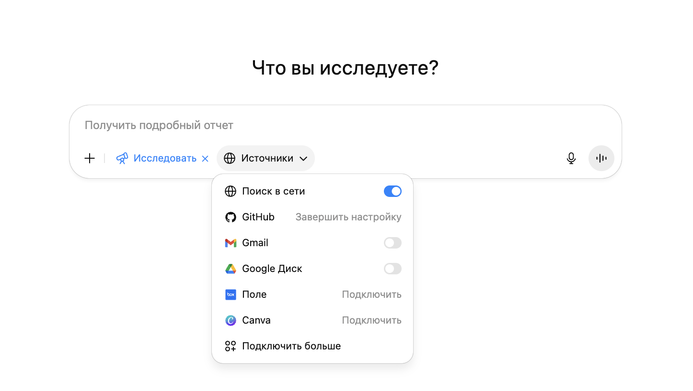
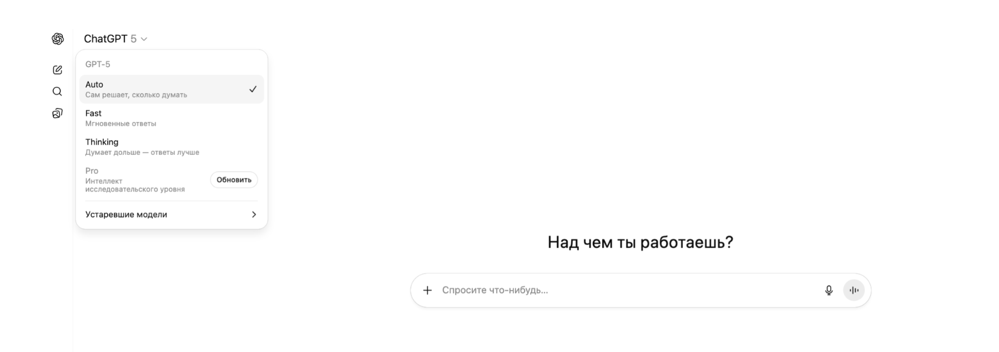
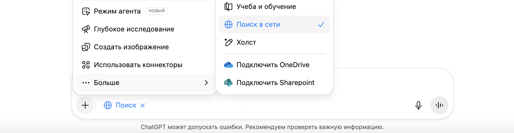
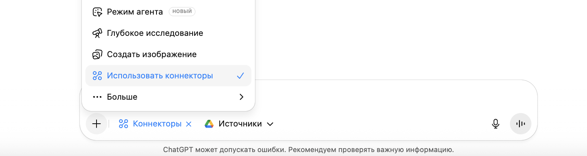
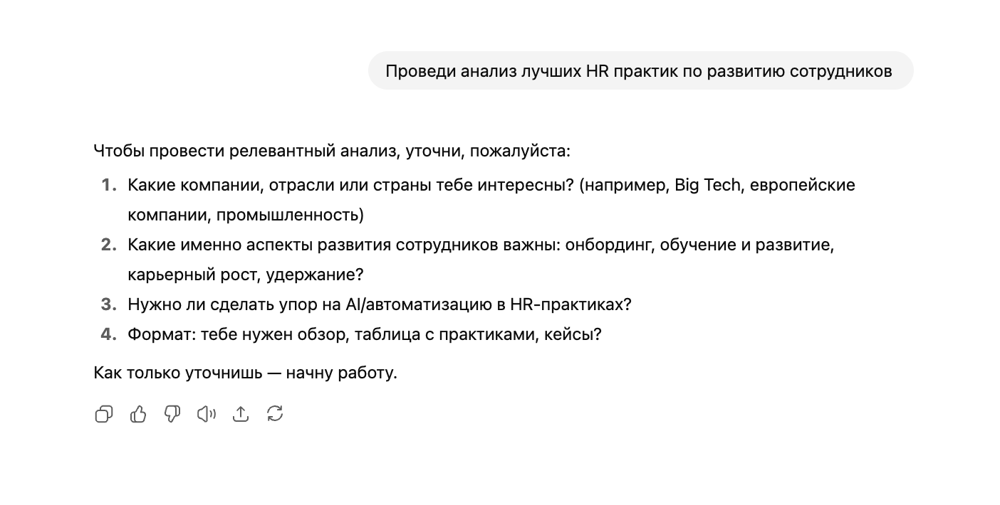
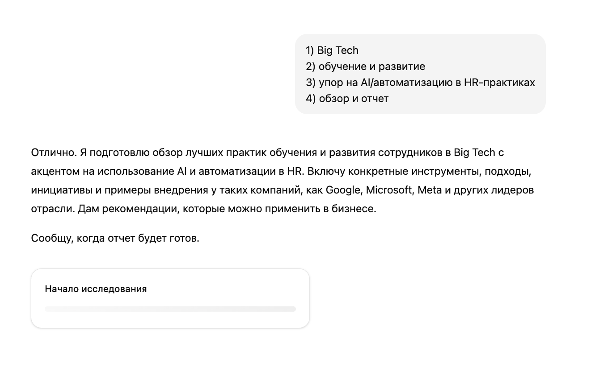
Deep Research сначала задаёт уточняющие вопросы, затем проводит исследование с доступом к интернету, анализируя множество источников.
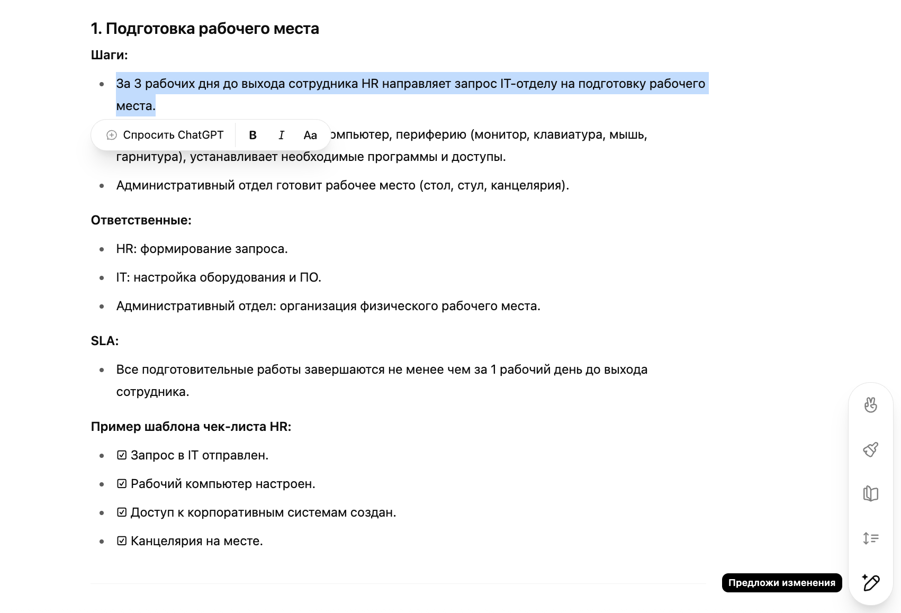
Canvas открывает документ рядом с чатом. Можно редактировать текст, просить AI переписать отдельные абзацы, менять стиль, и экспортировать в PDF/DOCX.
Приватность, Custom Instructions и создание собственных GPT.
По умолчанию ChatGPT может использовать ваши данные для обучения. Важно настроить приватность:
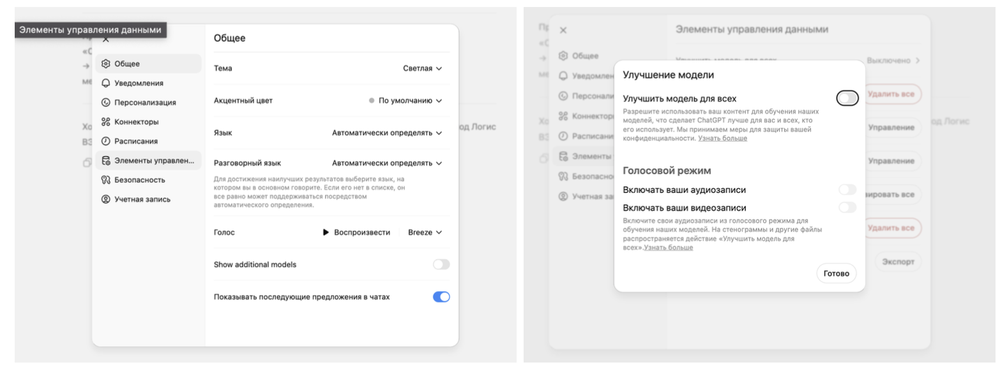
Settings → Data Controls → Improve the model → Off
Используйте Temporary Chat для конфиденциальных данных — они не сохраняются
Для бизнеса: данные не используются для обучения по умолчанию
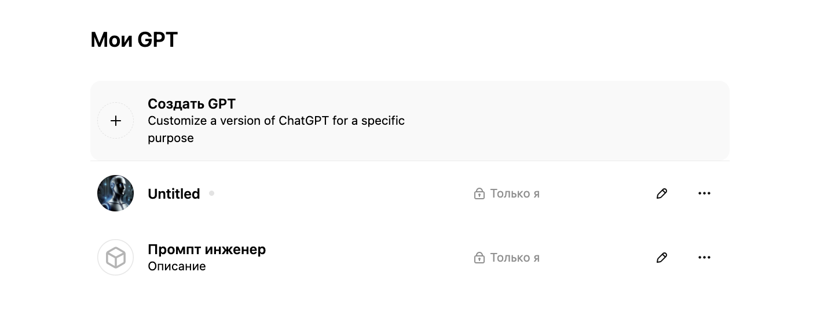
Список ваших GPT — My GPTs
Опишите, для чего нужен ваш GPT: роль, аудитория, типичные запросы.
Системный промпт, определяющий поведение. Используйте фреймворк AUTOMAT.
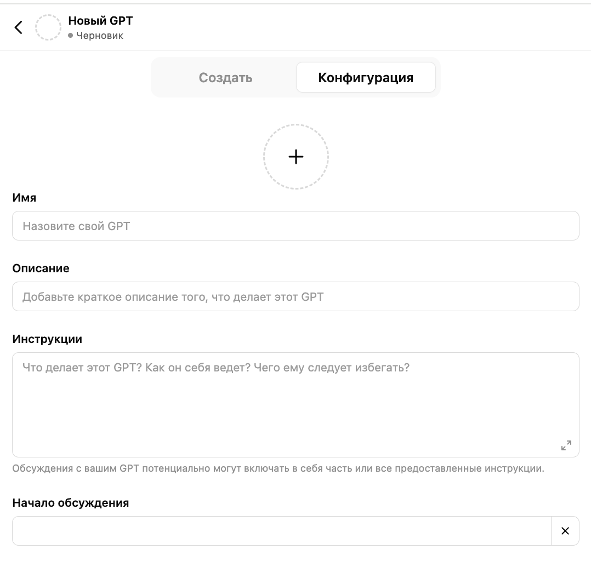
Добавьте файлы (PDF, DOCX, CSV) — GPT будет использовать их как базу знаний (RAG).
Выберите capabilities (Web, DALL-E, Code), протестируйте с типичными запросами, итерируйте.
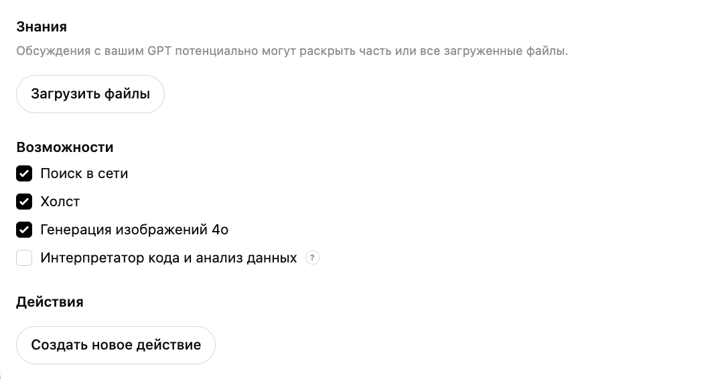
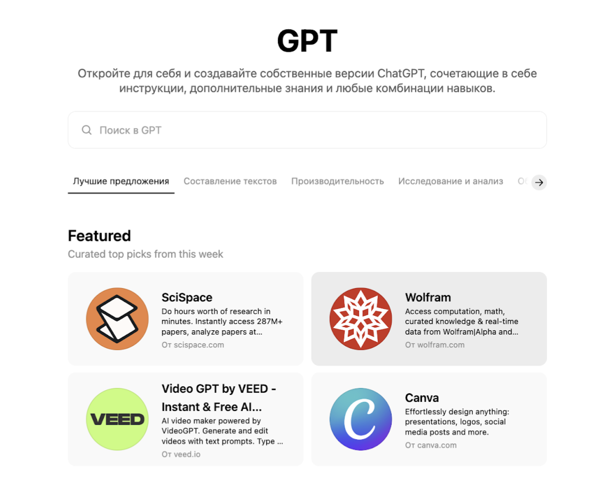
Маркетплейс готовых GPT от сообщества. Тысячи ассистентов для маркетинга, аналитики, кода и творчества.
Маркетплейсы промптов — новый рынок, где качественные промпты продаются и покупаются.
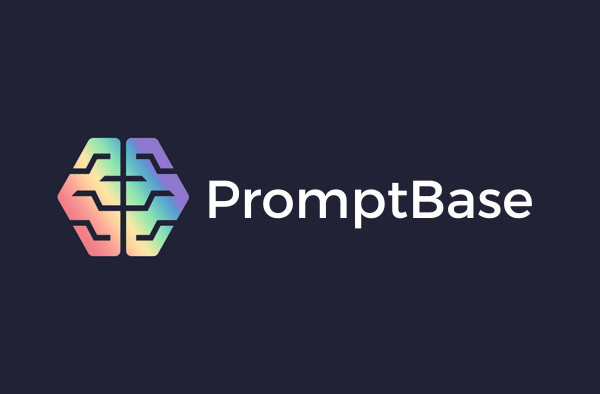
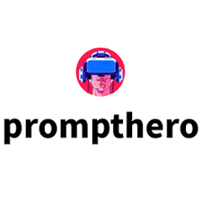
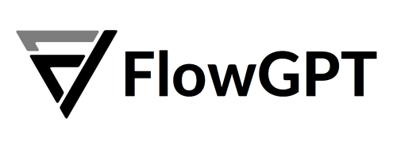
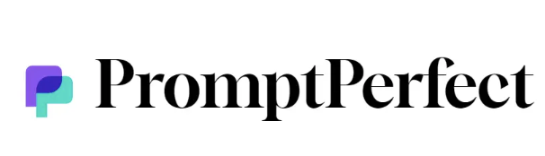
Примените изученные фреймворки и техники на реальной задаче.
Напишите промпт для генерации контент-стратегии для социальных сетей компании по производству продуктов питания. Используйте один из изученных фреймворков (TAG, RISE, BAB, RTF или AUTOMAT).
Role: Ты — SMM-стратег с 7-летним опытом в FMCG. Input: Компания «ЭкоФерма» — органические продукты, ЦА: женщины 28-45, ценности: здоровье, экология, семья. Каналы: Instagram, Telegram. Бюджет: 150K руб/мес. Steps: 1. Проанализируй ЦА и выдели 5 ключевых болей 2. Предложи контент-план на месяц (20 постов) 3. Для каждого поста укажи формат и тему 4. Добавь 3 идеи для Reels/Stories Expectation: Таблица с контент-планом + отдельный блок с идеями для видео.
Напиши контент-план для продуктовой компании в соцсетях.
❌ Нет роли — модель не знает с какой экспертизой отвечать
❌ Нет контекста — какая компания, какая аудитория?
❌ Нет структуры — что именно нужно в контент-плане?
❌ Нет формата — таблица? текст? на какой период?
Попробуйте написать промпт в ChatGPT прямо сейчас. Начните с плохого варианта, затем улучшите его с помощью фреймворка. Сравните результаты — разница будет очевидна!
Ресурсы для дальнейшего изучения промпт-инжиниринга.